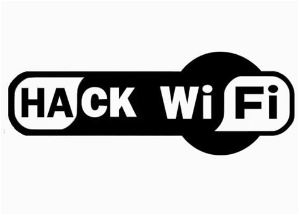

DeAuth Attack
Presented By:Kiran RS
5th Sem ECE
BMSCE
Contents
- Introduction
- What is DeAuth Attack?
- How does it work?
- DEMO
- How to safeguard ourselves?
- End Note
Introduction
All the WiFi Devices used across the globe is based on IEEE 802.11 standards. These standards are revised time to time and as of now there are multiple standards defined which differs in the maximum range, bandwidth, data speed, security and efficiency.
What is DeAuth Attack
Wi-Fideauthentication attack is a type of denial-of-service attack that targets communication between a user and a Wi-Fi wireless access point.
DeAuth!=Jammer
A WiFi Jammer works by introducing lot of traffic in the same band of frequency as the Access Point and thereby interferes with the existing signal and distorts it and results in failure of wireless communication between the client and the AP but DeAuth doesn't introduce any interference but rather takes advantage of the management frames of the AP and exploits it.
How DeAuth Works?
To understand how this attack works we need to know what are management frames. Management frames are wifi frames used to establish and maintain stable secure communication between AP and client. Different management frames are given below.
Deauthentication Frame
When a user sends a request to the AP to disconnect, the AP in turn replies with this frame which commands the client to successfully disconnect from the AP. The bug in this frame is that it is not encrypted and can be easily spoofed!.
So we can spoof a Deauth frame and send to all the clients connected to the AP using their MAC address which is obtained using network sniffing thereby forcing the client or clients to disconnect from the AP.
Demo
Stuff Required to carry out a D-Attack
- ESP8266 (NODE MCU)
- Arduino IDE
- VICTIM

How to be Safe from DeAuth
A new standard called IEEE 802.11w was released in 2009, which encrypted the deauthentication frames, so upgrading to a better router is the way to go but the catch is both the client and AP should be updated or else this doesn't help and the attack can anyways be carried out.
WiFi 802.11ac with 5Ghz has this feature inbuilt and therefore is safe but it is not preffered in public because of its short range.
Other Way to be safe from these kind of attacks is to hide your AP after you have ur devices connected to your network.
Resources
- http://www.sysnet.ucsd.edu/~bellardo/pubs/usenix-sec03-80211dos-html/aio.html
- https://en.wikipedia.org/wiki/IEEE_802.11
- https://github.com/spacehuhn/esp8266_deauther